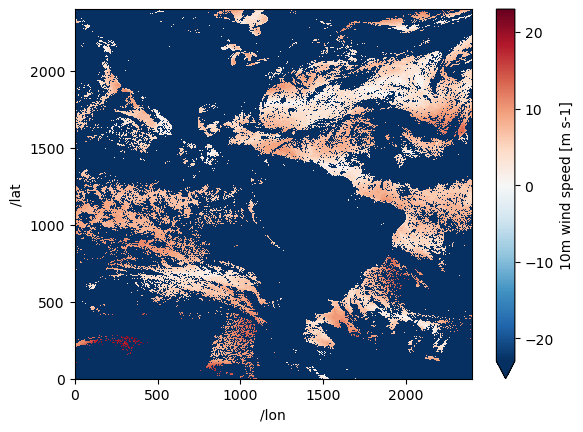
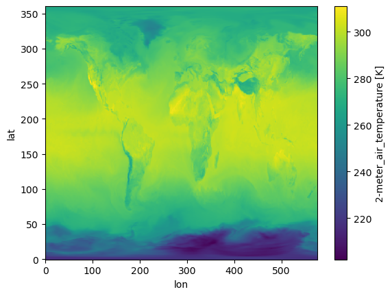

import xarray as xr
import pydap.clientAccessing data on NASA Earthdata servers via OPeNDAP protocol and PyDAP
📘 Learning Objectives
- Repeat the NASA notebook but illustrating PyDAP authentication.
Overview
See the 3-nasa.ipynb notebook for the recommended way to authenticate. This notebook is included to document PyDAP authentication.
PyDAP will automatically look for ~/.netrc file and use that so it may seem that you are not authenticating (if you have that file). But you are. The “silent” method fails if the data require a User Agreement (EULA) that you have to accept on your Earthdata profile because it cannot handle redirects. You can set up a session with username/password which will work for single files with xarray.open_dataset but fails with xarray.open_mfdataset. Setting up a session with a token works in all cases, but is more of a hassle. earthaccess will authenticate from your ~/.netrc file and handle the token for you. So I recommend that approach.
I am going to first show how to set up a token and create a “session” that is passed to xarray. For what I have found (in March 2025), this works to get past “re-direct” errors that arise when the data require a EULA. Tokens also get past the redirect errors from other non-NASA OPeNDAP servers that use NASA EDL (USDA and NSIDC). At the end, I will show how xarray+pydap can automatically use your .netrc file to authenticate, but this won’t work for data that need a EULA so it might be best to use the token method as that will work for data that need a EULA too.
References
Prerequisites
Set up a NASA EDL token. Go to https://urs.earthdata.nasa.gov/profile and click on Generate Token. Copy your token (it is exceedingly long) and paste into this code. Run this in a terminal windown (not notebook). Alternatively, open ~/.env and paste in NASA_EDL_TOKEN='your_edl_token_here'. Note the token only last a month, so you will need to refresh your tokens regularly.
echo "NASA_EDL_TOKEN='your_edl_token_here'" >> ~/.envNow we can load the token into any Jupyter notebook with
from dotenv import load_dotenv
load_dotenv()
edl_token = os.getenv("NASA_EDL_TOKEN")For the section, where I cover authentication with username and password, I assume you have a .netrc file at ~ (home). ~/.netrc should look just like this with your username and password. Create that file if needed.
machine urs.earthdata.nasa.gov
login yourusername
password yourpasswordPackages
Three ways to authenticate with pydap
- Let
pydapfind your~/.netrcfile - Set up a session with your Earthdata username and password
- Set up a session with a Earthdata token
I suggest you only use the latter since that works for all cases: data w or wo a EULA, singles files and multiple files, xarray open_dataset and open_mfdataset.
Let pydap use your .netrc file
If the data need Earthdata authentication but don’t need a EULA, then you can let pydap use your .netrc file silently. But this method is the most likely to produce redirect errors and access errors.
The following code works because pydap uses the .netrc file that is in ~/.netrc. It does this silently for you. But this only works because this particular dataset does not require a User Agreement to be accepted on your Earthdata profile.
# doesn't need a eula
url="dap4://opendap.earthdata.nasa.gov/collections/C2036877806-POCLOUD/granules/20220812010000-OSISAF-L3C_GHRSST-SSTsubskin-GOES16-ssteqc_goes16_20220812_010000-v02.0-fv01.0"
ds = xr.open_dataset(url, engine="pydap", decode_timedelta=False)
ds["wind_speed"].load()<xarray.DataArray 'wind_speed' (/time: 1, /lat: 2400, /lon: 2400)> Size: 46MB
array([[[nan, nan, nan, ..., nan, nan, nan],
[nan, nan, nan, ..., nan, nan, nan],
[nan, nan, nan, ..., nan, nan, nan],
...,
[nan, nan, nan, ..., nan, nan, nan],
[nan, nan, nan, ..., 8., 8., 8.],
[nan, nan, nan, ..., 8., 8., nan]]])
Dimensions without coordinates: /time, /lat, /lon
Attributes:
long_name: 10m wind speed
standard_name: wind_speed
units: m s-1
height: 10 m
valid_min: 0
valid_max: 127
time_offset: 0.0
source: WSP-ECMWF-Forecast
comment: These wind speeds were created by the ECMWF and represent...
Maps: ()Set up a session with username and password
Using the session argument with pydap is more robust because it will open data that require a EULA. You can set up a session like this with your username and password in your .netrc file. This mostly works but it fails when using xarray.open_mfdataset() with data that require a EULA. So using a token is better though more of a hassle.
import netrc
# Get credentials from .netrc
auth_host = "urs.earthdata.nasa.gov"
try:
credentials = netrc.netrc().authenticators(auth_host)
if credentials:
username, _, password = credentials
else:
raise ValueError("No credentials found in .netrc!")
except FileNotFoundError:
raise FileNotFoundError("Could not find ~/.netrc. Ensure it exists and is configured correctly.")import pydap
from pydap.client import open_url
from pydap.cas.urs import setup_session
pw_session = setup_session(username, password)Set up a session with a EDL token
This is the robust way to set up an authenticated session. Note see the notebook where I authenticate with earthaccess, which makes this easier and you don’t need to save anything to .env.
Load the token. Make sure you have your token set up in your ~/.env file. See prerequisites.
from dotenv import load_dotenv
import os
load_dotenv()
edl_token = os.getenv("NASA_EDL_TOKEN")Next we set up a NASA EDL session with this token.
import requests
auth_hdr="Bearer " + edl_token
token_session = requests.Session()
token_session.headers={"Authorization": auth_hdr}For the rest of the notebook, the token_session will be used.
Load non-EULA data
# doesn't point to specific file but we will spec protocol
url="https://opendap.earthdata.nasa.gov/collections/C2036877806-POCLOUD/granules/20220812010000-OSISAF-L3C_GHRSST-SSTsubskin-GOES16-ssteqc_goes16_20220812_010000-v02.0-fv01.0"
# this is another test url that works for this example
# url="https://opendap.earthdata.nasa.gov/hyrax/data/nc/fnoc1.nc"%%time
#from pydap.client import open_url
pydap_ds = pydap.client.open_url(url, protocol="dap4", session=token_session)CPU times: user 13 ms, sys: 11.9 ms, total: 24.9 ms
Wall time: 744 ms%%time
# getting the data does work
test_ds = pydap_ds['lat'][:]CPU times: user 18 ms, sys: 628 µs, total: 18.6 ms
Wall time: 2.67 sds = xr.open_dataset(
url.replace("https", "dap4", 1), engine="pydap",
decode_cf=False, session=token_session)ds["wind_speed"].plot();/srv/conda/envs/notebook/lib/python3.12/site-packages/xarray/plot/utils.py:260: RuntimeWarning: overflow encountered in scalar absolute
vlim = max(abs(vmin - center), abs(vmax - center))
%%time
# This is doing the same thing as engine="pydap" I think but I don't have to know the dap4 replacement
# ds created is the same though
store = xr.backends.PydapDataStore(pydap_ds)
ds = xr.open_dataset(store, decode_cf=False)CPU times: user 2.11 ms, sys: 0 ns, total: 2.11 ms
Wall time: 2.11 msData with a EULA
Letting pydap silently use your .netrc fails (redirect error) when there is a EULA and you have accepted the EULA. You need to set up a session with username and password or with a token.
Prerequisites
Make sure you have the GESDISC EULA accepted.
- Log into https://urs.earthdata.nasa.gov
- Then go here https://urs.earthdata.nasa.gov/profile
- Then click EULAs
- Go to unaccepted EULAs and make sure that GESDISC is accepted
# the GESDISC data requires a EULA
eula_url = 'https://goldsmr4.gesdisc.eosdis.nasa.gov/opendap/MERRA2/M2T1NXSLV.5.12.4/2016/06/MERRA2_400.tavg1_2d_slv_Nx.20160601.nc4'%%time
import pydap
from pydap.client import open_url
pydap_ds = open_url(eula_url, session=token_session, protocol="dap4")CPU times: user 41.3 ms, sys: 3.79 ms, total: 45.1 ms
Wall time: 1.58 s# works when we try to get data
test_ds = pydap_ds['lat'][:]%%time
# this works but is a lot of syntax to remember
ds = xr.open_dataset(eula_url.replace("https", "dap4", 1),
engine="pydap", decode_cf=False,
session=token_session)CPU times: user 42.4 ms, sys: 3.77 ms, total: 46.2 ms
Wall time: 1.08 s# yeah! I can get the data
ds = ds.rename({"/time": "time", "/lat": "lat", "/lon": "lon"})
ds["T2M"].isel(time=1).plot();
%%time
import xarray as xr
# This works too but is so much slower
store = xr.backends.PydapDataStore(pydap_ds)
ds = xr.open_dataset(store)CPU times: user 35.4 ms, sys: 11.5 ms, total: 46.9 ms
Wall time: 2.47 s# I have to rename variables
ds = ds.rename({"/time": "time", "/lat": "lat", "/lon": "lon"})
ds["T2M"].isel(time=1).plot();
Creating data cubes
Our goal is not individual files rather data cubes from multiple files. We will use xarray.open_mfdataset but we need to make some tweaks.
- We need to use
dap4instead ofhttps. I don’t know what to do if that doesn’t work. - We need to concatenate using
\timenottimesince the dim name has that slash in it.
Example 1 Non-EULA data
# doesn't point to specific file but we will spec protocol
url1="dap4://opendap.earthdata.nasa.gov/collections/C2036877806-POCLOUD/granules/20220812010000-OSISAF-L3C_GHRSST-SSTsubskin-GOES16-ssteqc_goes16_20220812_010000-v02.0-fv01.0"
url2="dap4://opendap.earthdata.nasa.gov/collections/C2036877806-POCLOUD/granules/20220813010000-OSISAF-L3C_GHRSST-SSTsubskin-GOES16-ssteqc_goes16_20220813_010000-v02.0-fv01.0"
urls = [url1, url2]
urls['dap4://opendap.earthdata.nasa.gov/collections/C2036877806-POCLOUD/granules/20220812010000-OSISAF-L3C_GHRSST-SSTsubskin-GOES16-ssteqc_goes16_20220812_010000-v02.0-fv01.0',
'dap4://opendap.earthdata.nasa.gov/collections/C2036877806-POCLOUD/granules/20220813010000-OSISAF-L3C_GHRSST-SSTsubskin-GOES16-ssteqc_goes16_20220813_010000-v02.0-fv01.0']ds = xr.open_mfdataset(urls, engine="pydap",
combine="nested",
concat_dim="/time", decode_cf=False,
session=token_session)
ds<xarray.Dataset> Size: 288MB
Dimensions: (/time: 2, /lat: 2400, /lon: 2400)
Dimensions without coordinates: /time, /lat, /lon
Data variables: (12/19)
wind_speed (/time, /lat, /lon) int8 12MB dask.array<chunksize=(1, 2400, 2400), meta=np.ndarray>
lon (/time, /lon) float32 19kB dask.array<chunksize=(1, 2400), meta=np.ndarray>
or_longitude (/time, /lat, /lon) int16 23MB dask.array<chunksize=(1, 2400, 2400), meta=np.ndarray>
time (/time) int32 8B dask.array<chunksize=(1,), meta=np.ndarray>
sses_standard_deviation (/time, /lat, /lon) int8 12MB dask.array<chunksize=(1, 2400, 2400), meta=np.ndarray>
sst_dtime (/time, /lat, /lon) int32 46MB dask.array<chunksize=(1, 2400, 2400), meta=np.ndarray>
... ...
dt_analysis (/time, /lat, /lon) int8 12MB dask.array<chunksize=(1, 2400, 2400), meta=np.ndarray>
satellite_zenith_angle (/time, /lat, /lon) int8 12MB dask.array<chunksize=(1, 2400, 2400), meta=np.ndarray>
lat (/time, /lat) float32 19kB dask.array<chunksize=(1, 2400), meta=np.ndarray>
adi_dtime_from_sst (/time, /lat, /lon) int8 12MB dask.array<chunksize=(1, 2400, 2400), meta=np.ndarray>
or_latitude (/time, /lat, /lon) int16 23MB dask.array<chunksize=(1, 2400, 2400), meta=np.ndarray>
sses_bias (/time, /lat, /lon) int8 12MB dask.array<chunksize=(1, 2400, 2400), meta=np.ndarray>
Attributes: (12/53)
Conventions: CF-1.4
title: Sea Surface Temperature
summary: The L3C product derived from GOES16/ABI brigh...
references: Geostationary Sea Surface Temperature Product...
institution: OSISAF
comment: None
... ...
netcdf_version_id: 4.6.3
build_dmrpp: 3.20.9-91
bes: 3.20.9-91
libdap: libdap-3.20.8-41
configuration: \n# TheBESKeys::get_as_config()\nAllowedHosts...
invocation: build_dmrpp -c /tmp/conf_GGue -f /tmp/tmph648...Let’s do some slicing and see how fast we can get the data.
ds = ds.rename({"/time": "time", "/lat": "lat", "/lon": "lon"})%%time
test = ds["wind_speed"].isel(time=1).load()CPU times: user 32.1 ms, sys: 36 ms, total: 68.1 ms
Wall time: 6.08 sExample 2 EULA data
token_session is critical so that things don’t go south with re-directs.
eula_url1 = 'dap4://goldsmr4.gesdisc.eosdis.nasa.gov/opendap/MERRA2/M2T1NXSLV.5.12.4/2016/06/MERRA2_400.tavg1_2d_slv_Nx.20160601.nc4'
eula_url2 = 'dap4://goldsmr4.gesdisc.eosdis.nasa.gov/opendap/MERRA2/M2T1NXSLV.5.12.4/2016/06/MERRA2_400.tavg1_2d_slv_Nx.20160602.nc4'
eula_urls = [eula_url1, eula_url2]%%time
import xarray as xr
# very fast and this is 1Tb of data
ds = xr.open_mfdataset(eula_urls, engine="pydap",
combine="nested", concat_dim="/time",
decode_cf=False, session=token_session)
dsCPU times: user 141 ms, sys: 12 ms, total: 153 ms
Wall time: 2.24 s<xarray.Dataset> Size: 2GB
Dimensions: (/time: 48, /lat: 361, /lon: 576)
Dimensions without coordinates: /time, /lat, /lon
Data variables: (12/50)
U2M (/time, /lat, /lon) float32 40MB dask.array<chunksize=(24, 361, 576), meta=np.ndarray>
V250 (/time, /lat, /lon) float32 40MB dask.array<chunksize=(24, 361, 576), meta=np.ndarray>
TROPT (/time, /lat, /lon) float32 40MB dask.array<chunksize=(24, 361, 576), meta=np.ndarray>
TROPPB (/time, /lat, /lon) float32 40MB dask.array<chunksize=(24, 361, 576), meta=np.ndarray>
T2M (/time, /lat, /lon) float32 40MB dask.array<chunksize=(24, 361, 576), meta=np.ndarray>
TQL (/time, /lat, /lon) float32 40MB dask.array<chunksize=(24, 361, 576), meta=np.ndarray>
... ...
T2MWET (/time, /lat, /lon) float32 40MB dask.array<chunksize=(24, 361, 576), meta=np.ndarray>
U500 (/time, /lat, /lon) float32 40MB dask.array<chunksize=(24, 361, 576), meta=np.ndarray>
QV10M (/time, /lat, /lon) float32 40MB dask.array<chunksize=(24, 361, 576), meta=np.ndarray>
lat (/time, /lat) float64 139kB dask.array<chunksize=(24, 361), meta=np.ndarray>
lon (/time, /lon) float64 221kB dask.array<chunksize=(24, 576), meta=np.ndarray>
time (/time) int32 192B dask.array<chunksize=(24,), meta=np.ndarray>
Attributes: (12/31)
History: Original file generated: Tue Jun 14 18...
Comment: GMAO filename: d5124_m2_jan10.tavg1_2d...
Filename: MERRA2_400.tavg1_2d_slv_Nx.20160601.nc4
Conventions: CF-1
Institution: NASA Global Modeling and Assimilation ...
References: http://gmao.gsfc.nasa.gov
... ...
identifier_product_doi: 10.5067/VJAFPLI1CSIV
RangeBeginningDate: 2016-06-01
RangeBeginningTime: 00:00:00.000000
RangeEndingDate: 2016-06-01
RangeEndingTime: 23:59:59.000000
Unlimited_Dimension: timeprint(f"Dataset size: {ds.nbytes/1e6:.2f} MB")Dataset size: 1876.77 MB# We can load the data
ds = ds.rename({"/time": "time", "/lat": "lat", "/lon": "lon"})
ds["T2M"].isel(time=1).load()<xarray.DataArray 'T2M' (lat: 361, lon: 576)> Size: 832kB
array([[218.05759, 218.05759, 218.05759, ..., 218.05759, 218.05759,
218.05759],
[217.35446, 217.35446, 217.33884, ..., 217.38571, 217.38571,
217.37009],
[217.10446, 217.10446, 217.10446, ..., 217.10446, 217.10446,
217.10446],
...,
[266.9951 , 266.98727, 266.97946, ..., 267.01462, 267.0068 ,
266.999 ],
[268.10446, 268.10446, 268.10446, ..., 268.10056, 268.10056,
268.10446],
[269.124 , 269.124 , 269.124 , ..., 269.124 , 269.124 ,
269.124 ]], dtype=float32)
Dimensions without coordinates: lat, lon
Attributes: (12/14)
long_name: 2-meter_air_temperature
units: K
_FillValue: 999999987000000.0
missing_value: 999999987000000.0
fmissing_value: 999999987000000.0
scale_factor: 1.0
... ...
vmax: 999999987000000.0
vmin: -999999987000000.0
valid_range: [-999999987000000.0, 999999987000000.0]
origname: T2M
fullnamepath: /T2M
Maps: ()Note, if you tried to use the username/password for creating the session instead of a token, you would get the redirect error.
Example 3 from PyDap documentation
In this example, constraint expression is used just to get certain variables. See full notebook here.
baseURL = 'dap4://opendap.earthdata.nasa.gov/providers/POCLOUD/collections/'
Temp_Salt = "ECCO%20Ocean%20Temperature%20and%20Salinity%20-%20Monthly%20Mean%20llc90%20Grid%20(Version%204%20Release%204)/granules/OCEAN_TEMPERATURE_SALINITY_mon_mean_"
year = '2017-'
month = '01'
end_ = '_ECCO_V4r4_native_llc0090'
CE = '?dap4.ce=/THETA;/SALT;/tile;/j;/k;/i;/time'
Temp_2017 = [baseURL + Temp_Salt + year + f'{i:02}' + end_ + CE for i in range(1, 4)]
Temp_2017['dap4://opendap.earthdata.nasa.gov/providers/POCLOUD/collections/ECCO%20Ocean%20Temperature%20and%20Salinity%20-%20Monthly%20Mean%20llc90%20Grid%20(Version%204%20Release%204)/granules/OCEAN_TEMPERATURE_SALINITY_mon_mean_2017-01_ECCO_V4r4_native_llc0090?dap4.ce=/THETA;/SALT;/tile;/j;/k;/i;/time',
'dap4://opendap.earthdata.nasa.gov/providers/POCLOUD/collections/ECCO%20Ocean%20Temperature%20and%20Salinity%20-%20Monthly%20Mean%20llc90%20Grid%20(Version%204%20Release%204)/granules/OCEAN_TEMPERATURE_SALINITY_mon_mean_2017-02_ECCO_V4r4_native_llc0090?dap4.ce=/THETA;/SALT;/tile;/j;/k;/i;/time',
'dap4://opendap.earthdata.nasa.gov/providers/POCLOUD/collections/ECCO%20Ocean%20Temperature%20and%20Salinity%20-%20Monthly%20Mean%20llc90%20Grid%20(Version%204%20Release%204)/granules/OCEAN_TEMPERATURE_SALINITY_mon_mean_2017-03_ECCO_V4r4_native_llc0090?dap4.ce=/THETA;/SALT;/tile;/j;/k;/i;/time']Create data cube with open_mfdataset but not concat dim is /time not time. This takes a really long time, but if we didn’t do the constraint expression part, it would take much longer. So it is good to do that step.
Note token_session is not required since these data don’t need a EULA, but good practice to use.
%%time
# 13 seconds to assemble the data cube for a 126Mb dataset...slow
theta_salt_ds = xr.open_mfdataset(
Temp_2017,
engine='pydap',
parallel=True,
combine='nested',
concat_dim='/time',
session=token_session
)
theta_salt_dsCPU times: user 184 ms, sys: 12.7 ms, total: 196 ms
Wall time: 13 s<xarray.Dataset> Size: 126MB
Dimensions: (/time: 3, /k: 50, /tile: 13, /j: 90, /i: 90)
Coordinates:
time (/time) datetime64[ns] 24B dask.array<chunksize=(1,), meta=np.ndarray>
Dimensions without coordinates: /time, /k, /tile, /j, /i
Data variables:
SALT (/time, /k, /tile, /j, /i) float32 63MB dask.array<chunksize=(1, 50, 13, 90, 90), meta=np.ndarray>
THETA (/time, /k, /tile, /j, /i) float32 63MB dask.array<chunksize=(1, 50, 13, 90, 90), meta=np.ndarray>
i (/time, /i) int32 1kB dask.array<chunksize=(1, 90), meta=np.ndarray>
j (/time, /j) int32 1kB dask.array<chunksize=(1, 90), meta=np.ndarray>
k (/time, /k) int32 600B dask.array<chunksize=(1, 50), meta=np.ndarray>
tile (/time, /tile) int32 156B dask.array<chunksize=(1, 13), meta=np.ndarray>
Attributes: (12/62)
acknowledgement: This research was carried out by the Jet...
author: Ian Fenty and Ou Wang
cdm_data_type: Grid
comment: Fields provided on the curvilinear lat-l...
Conventions: CF-1.8, ACDD-1.3
coordinates_comment: Note: the global 'coordinates' attribute...
... ...
time_coverage_duration: P1M
time_coverage_end: 2017-02-01T00:00:00
time_coverage_resolution: P1M
time_coverage_start: 2017-01-01T00:00:00
title: ECCO Ocean Temperature and Salinity - Mo...
uuid: f5b7028c-4181-11eb-b7e6-0cc47a3f47b1print(f"Dataset size: {theta_salt_ds.nbytes/1e6:.2f} MB")Dataset size: 126.36 MBtheta_salt_ds = theta_salt_ds.rename({"/time": "time", "/j": "j", "/i": "i", "/tile": "tile", "/k": "k"})/tmp/ipykernel_1511/704975482.py:1: UserWarning: rename '/time' to 'time' does not create an index anymore. Try using swap_dims instead or use set_index after rename to create an indexed coordinate.
theta_salt_ds = theta_salt_ds.rename({"/time": "time", "/j": "j", "/i": "i", "/tile": "tile", "/k": "k"})theta_salt_ds["THETA"].isel(time=1, tile=10, k=1).plot()
Conclusion
Use token-based sessions with pydap to ensure no redirect gotchas.